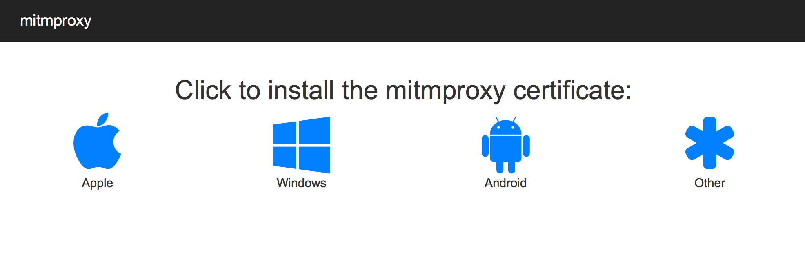

By far the easiest way to install the mitmproxy certs is to use the built-in web app. To do this, start mitmproxy and configure your target device with the correct proxy settings. Now start a browser on the device, and visit the magic domain mitm.it. You should see something like this:

Just click on the relevant icon, and then follow the setup instructions for the platform you're on.
Make sure you aren't using a bandwith optimizer (like Google's Data Compression Proxy on Chrome for Android) or the page will not load.